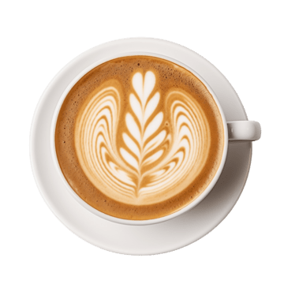

Biji Arabika pilihan racikan khas, gula aren organik murni nusantara, dan susu lembut bertekstur sutra. Enam kreasi istimewa, disajikan dengan penuh ketelitian.

Kami memperlakukan setiap langkah sebagai karya seni. Inilah bagaimana secangkir ketenangan Anda tercipta.
Arabika single-origin hasil perdagangan langsung dipetik tangan secara berkelanjutan dari dataran tinggi vulkanik Aceh Gayo dan Toraja, mendukung keluarga petani lokal.
Disangrai setiap minggu dalam jumlah terbatas menggunakan drum roaster besi cor. Profil sangrai diracik cermat untuk menonjolkan aroma kakao, madu bunga, dan manis kacang panggang.
Pra-infusi dan diekstraksi pada temperatur terkalibrasi serta tekanan stabil 9-bar guna menghasilkan crema belang harimau keemasan yang kental dan sarat minyak aromatik.
Distim hingga menghasilkan microfoam selembut sutra pada suhu 65°C, atau dipadukan dengan nektar gula aren murni dingin di atas es kristal bening.
“Arren Latte benar-benar memanjakan lidah saya. Aroma smoky gula aren asli yang berpadu dengan double shot lembutnya adalah kesempurnaan sejati.”
Penikmat Kopi · Malang
“Kopi specialty paling berkarakter di kota ini. Americano-nya sangat bersih dengan sentuhan citrus segar, ditambah suasana bernuansa gelap yang sangat nyaman.”
Arsitek & Pelanggan Setia
“Dark Mocha dan Cappuccino di sini luar biasa lezat. Foam-nya sehalus sutra dan estetikanya membuat setiap kunjungan terasa begitu istimewa.”
Creative Director · Malang
Singgahlah untuk menikmati espresso pagi yang tenang, sesi kerja sore ditemani es latte, atau membeli biji kopi segar sangrai kami.
Bantu kami menyempurnakan cita rasa dan layanan NOIR Coffee. Setiap masukan dari Anda sangat berharga.
Kritik dan saran Anda telah kami terima dan akan menjadi evaluasi untuk terus menyajikan yang terbaik.